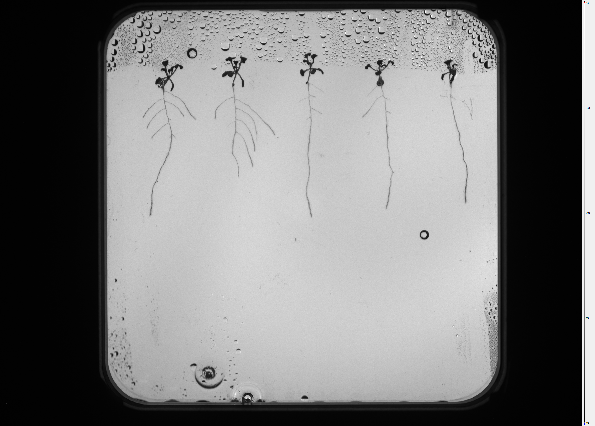
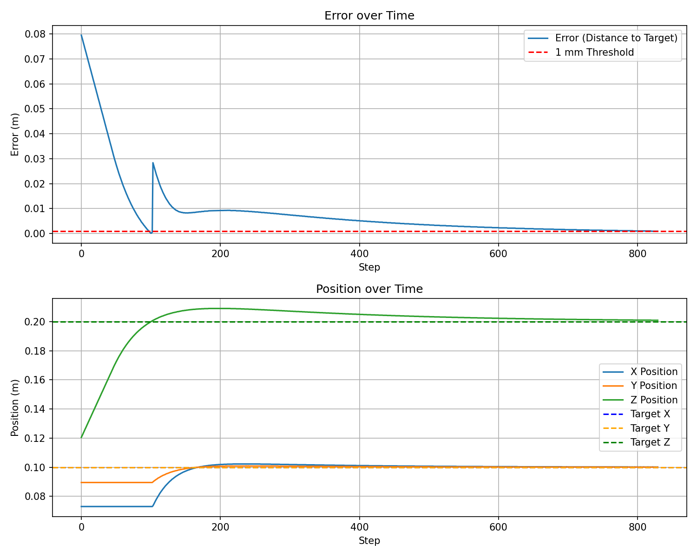

PID vs RL
Two controllers,
one clear winner
I implemented and compared two controllers. The results were clear — and instructive.
PID — a proportional-integral-derivative controller running independently on X, Y, Z axes. Motion follows three phases per target: lift to safe height → move XY → descend and deposit. Tuned gains achieve sub-millimetre accuracy in 60–800 simulation steps.
PPO (RL) — a Proximal Policy Optimisation agent trained with Stable Baselines3. Observation: [pipette_xyz, goal_xyz]. Action: 3D continuous velocity. Trained for 5 million timesteps using ClearML + Weights & Biases for experiment tracking. Best accuracy: ~5 mm in the CV pipeline integration.
The takeaway: for a well-defined, deterministic, point-to-point task with a known workspace, PID wins — it's faster, more accurate, and requires no training. RL is the right tool when the environment is complex or unpredictable.
| Metric | PID | PPO (RL) |
|---|---|---|
| Accuracy | ≤ 1 mm | ~5 mm |
| Training required | None | 5M timesteps |
| Steps per target | 60–800 | Variable |
| Deterministic | Yes | No |
| Adapts to new env | No | Yes (in theory) |

PID error over time

Position convergence
≤1mm
PID accuracy
5M
RL training steps
5
Plant strips / dish
256px
U-Net patch size